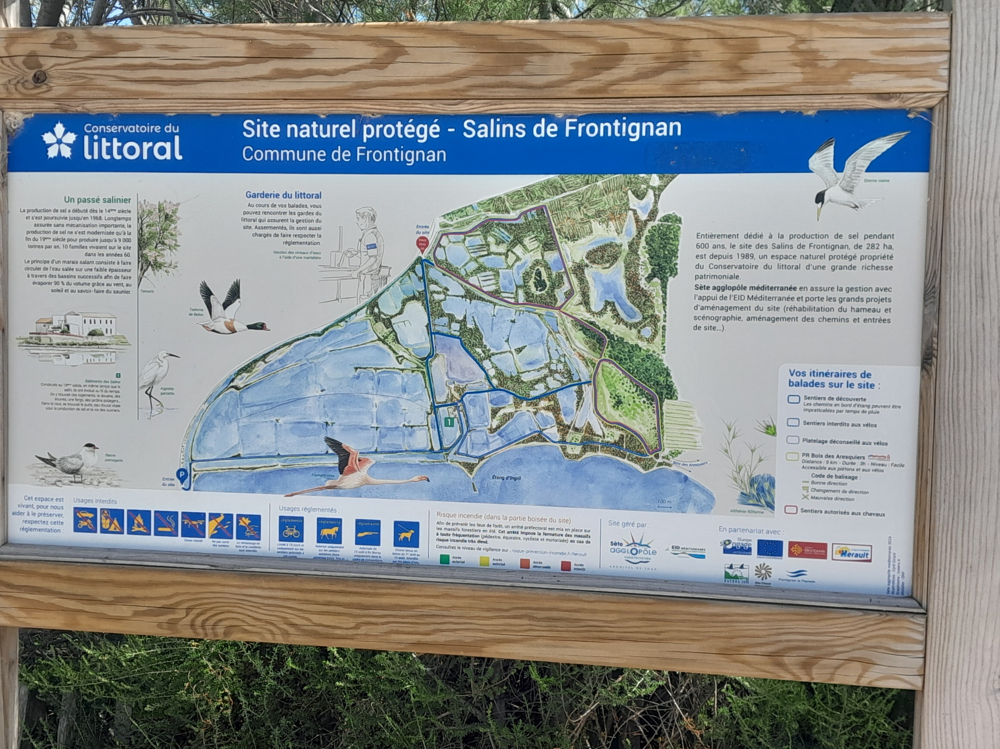
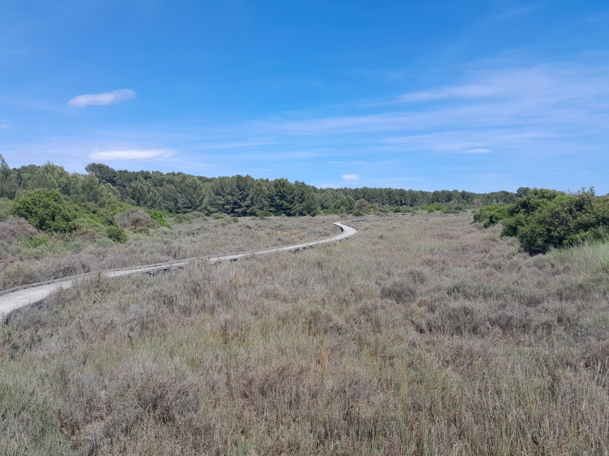
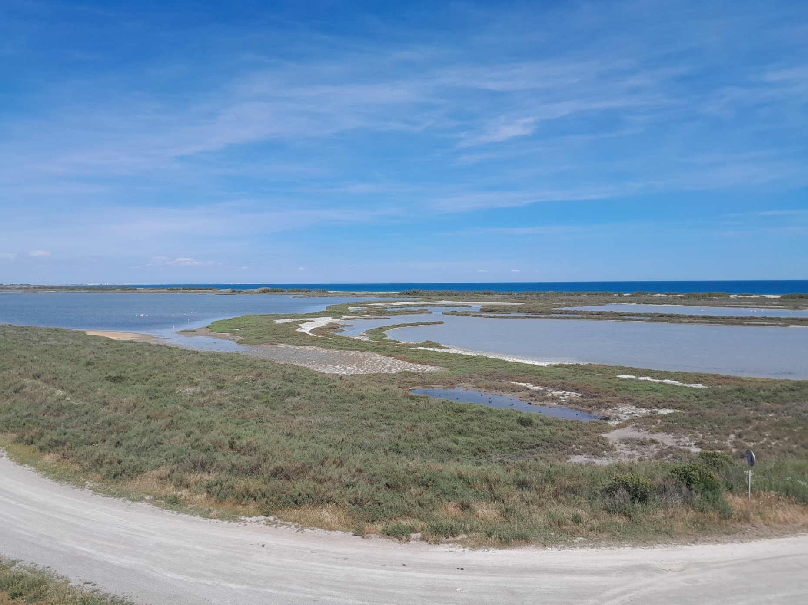
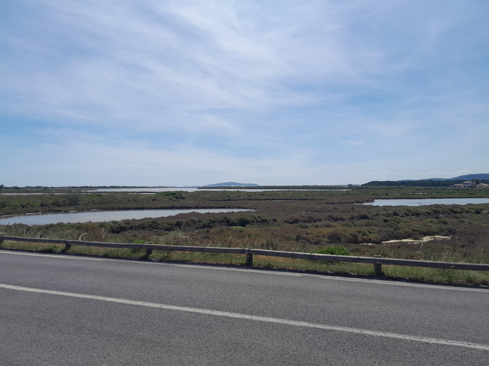

Tour de l'étang d'Ingril
L’étang d’Ingril, situé à l’est de Frontignan, est un espace naturel protégé s’étendant sur près de 5 km de long, classé Natura 2000 et préservé par le Conservatoire du littoral. Cet étang de 250 hectares abrite une faune remarquable, composée notamment de flamants roses, d’aigrettes et de hérons, ainsi qu’une flore tout aussi exceptionnelle. Cet espace naturel, niché entre le massif de la Gardiole et la Méditerranée, vous offrira un spectacle grandiose tout au long de votre randonnée. Ce sentier plat et facile constitue une excellente occasion de profiter d’une longue et contemplative balade en famille. Vous pouvez également réaliser ce parcourt en VTT.
Dernière vérification du parcours :
Départ:
Frotignan (parking du plan du Bassin)
Difficulté
Type : boucle, familiale
Type de patrique : marche, vélo
Sens conseillé : horaire
Difficulté: 2/5
Technicité : 0/5
Précautions
Cette randonnée ne suit pas de balisage. Il est conseillé de télécharger la trace GPX disponible sur cette page afin de pouvoir suivre l’itinéraire à l’aide d’un GPS si nécessaire. Cet espace étant un site naturel protégé, veillez à respecter la faune et la flore afin de préserver ce lieu exceptionnel.
Matérielles
Il est recommandé de porter des chaussures de marche adaptées et de prévoir une réserve d’eau suffisante.
Etape 1
Balisage : pas balisage
Depuis le parking du Plan du Bassin, il vous faudra emprunter la rue des Cheminots, puis la rue des Pielles. Vous longerez tout d’abord la voie ferrée, avant de traverser les vignobles bordant les salins de Frontignan. Continuez ensuite le long des salins jusqu’à rejoindre un sentier balisé en jaune
Etape 2
Balisage : jaune
Cette section emprunte un sentier aménagé par la Fédération française de randonnée et balisé en jaune. Cet espace naturel, protégé et préservé par le Conservatoire du littoral, vous fera traverser les salins en direction de la forêt des Aresquiers. Suivez le balisage jaune tout en longeant les étendues d’eau, où vous pourrez observer de nombreuses espèces d’oiseaux, notamment des flamants roses. Vous franchirez ensuite une passerelle traversant les marais avant de pénétrer dans le bois des Aresquiers, une agréable forêt de pins typiquement méditerranéenne. Vous pourrez notamment apercevoir une capitelle le long du parcours. Continuez enfin à suivre le balisage jaune jusqu’à atteindre le parking des Aresquiers.


Etape 3
Balisage : pas de balisage
Cette dernière section emprunte la piste cyclable qui longe l’étang d’Ingril sur toute sa longueur. Depuis le parking des Aresquiers, continuez en direction de la route départementale afin de rejoindre la piste cyclable, puis tournez à droite en direction de Frontignan-Plage. Vous longerez alors l’étang d’Ingril en profitant de magnifiques panoramas sur celui-ci. Continuez à suivre la piste cyclable jusqu’à revenir au parking du Plan du Bassin, point de départ de cette randonnée.

